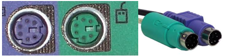

Entrada PS2
O conector PS/2 é um conector mini-DIN de 6 pinos usado para conectar
teclados e mouses
a um sistema de computador compatível com PC, sendo verde pro mouse e roxa para teclado.
Observação: pode ser encontrada entradas PS2 metade verde e matade roxa, elas continuam
tendo a mesma função, so que dessa vez elas servem conectar mouse ou teclado sem mudar a entrada

Entrada HDMI
O HDMI é um conector que transmite dados de um dispositivo ao outro. Neste caso, a tecnologia
é focada em transmitir imagem e som. Entre os avanços tecnológicos, podemos destacar uma melhor qualidade e velocidade
do som e da imagem transmitidas entre um notebook e um monitor, por exemplo.
/i.s3.glbimg.com/v1/AUTH_08fbf48bc0524877943fe86e43087e7a/internal_photos/bs/2018/F/F/drEdpCRjCqbINWNmQ8ZQ/hdmi-amazon.jpg)
Entrada Serial
A interface serial ou porta serial, também conhecida como RS-232 é uma porta de comunicação utilizada
para conectar pendrives, modems, mouses, algumas impressoras, scanners e outros equipamentos de hardware.
Na interface serial,
os bits são transferidos em fila, ou seja, um bit de dados de cada vez.